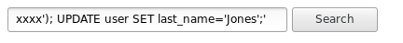

OWASP consider injection as the most seen vulnerability in web applications.
OWASP: Open Web Application Security Project
An injection of code happens when an attacker sends invalid data to the web application with the intention to make it do something different from what the application was designed/programmed to do.
Perhaps the most common example around this security vulnerability is the SQL query consuming untrusted data.
For example, a search form could pass the payload into an SQL query if not handled properly.
Search user form
Bad backend code
$search = $_GET['search'] ?? null;
$db = new PDO('mysql:host=localhost;dbname=proj', 'someusername', 'somepassword');
$sql = "SELECT * FROM user WHERE last_name='$search'";
$stmt = $db->prepare($sql);
$stmt->executeGood backend code
$sql = "SELECT * FROM user WHERE last_name=':search'";
$stmt = $db->prepare($sql);
$stmt = $db->bindParam([':search' => $search], PDO::PARAM_STR);
$stmt->executeBad user input
Resulting query
$sql = "SELECT * FROM user WHERE last_name='xxxx'); UPDATE user SET last_name='Jones';''";Vagrant is a lightweight, easy to use Virtualbox wrapper that will create a virtual machine, install an OS and pass control to a provisioner script for configuration.
File: ./Vagrantfile
config.vm.box = "debian/stretch"
config.vm.hostname = 'debian-web';
config.vm.network :private_network, ip: "192.168.30.105"
config.vm.synced_folder "./www", "/var/www", id: "vagrant-root", :group=>'www-data', :mount_options=>['dmode=775,fmode=775']
config.vm.provision "ansible" do |ansible|
ansible.playbook = "provisioners/playbook.yml"
ansible.inventory_path = "provisioners/ansible_hosts"
Ansible is an automation tool for configuration and deployment.
File: provisioners/playbook.yml
---
- hosts: webservers
user: vagrant
sudo: yes
roles:
- common
- add_ppas
- php7
- database
- webserver
File: provisioners/roles/common/tasks/add_ppas.yml
---
- name: Add dotdeb main
apt_repository: repo='deb http://packages.dotdeb.org wheezy all' state=present
- name: Add dotdeb main src
apt_repository: repo='deb-src http://packages.dotdeb.org wheezy all' state=present
- name: Add dotdeb php7.25
apt_repository: repo='deb http://packages.dotdeb.org wheezy-php7.25 all' state=present
- name: Add dotdeb php7.25 src
apt_repository: repo='deb-src http://packages.dotdeb.org wheezy-php7.25 all' state=present
- name: APT | Install DotDeb key
apt_key: url='http://www.dotdeb.org/dotdeb.gpg' state=present
tags: dotdeb
File: provisioners/roles/webserver/vars/main.yml
---
hostname: ansible.pres
docroot: /var/www/web
log_file_type: apache2
File: provisioners/roles/webservers/templates/local_dev.j2
server {
listen 80;
server_name {{ hostname }};
root {{ docroot }};
index index.php;
access_log /var/log/nginx/access.log;
error_log /var/log/nginx/error.log info;
location / {
try_files $uri $uri/ /index.php?$args;
}
location ~* \.(js|css|png|jpg|jpeg|gif|ico)$ {
expires 24h;
}
location ~ \.php$ {
fastcgi_pass unix:/var/run/php/php7.0-fpm.sock;
fastcgi_param SCRIPT_FILENAME $document_root$fastcgi_script_name;
include fastcgi_params;
}
# deny access to .htaccess files, if Apache's document root
# concurs with nginx's one
#
location ~ /\.(ht|svn|git|sql) {
deny all;
}
sendfile off;
}
File: provisioners/roles/webserver/tasks/main.yml
---
- include_vars: "vars/{{ env }}.yml"
- name: Nginx | Install Nginx
apt:
pkg=nginx
state=latest
force=yes
become: true
- name: Nginx | Ensure Nginx is running
service: name=nginx state=started
become: true
- name: Nginx | Check that path /var/www exists
file: dest=/var/www
state=directory
owner={{ system_user }}
group={{ system_user }}
become: true
- name: Nginx | Copy host file
template: src="templates/local_dev_nginx-debian.j2"
dest=/etc/nginx/sites-available/default.conf
mode=0700
notify: nginx-restart
become: true
File: provisioners/roles/common/tasks/php.yml
---
- name: PHP | Install PHP7
apt: pkg={{ item }} state=latest force=yes
with_items:
- php7.2-fpm
- php7.2-mysql
- php7.2-cli
- php7.2-curl
- name: PHP | Copy PHP config file
copy: src="{{ templates_dir }}/php/php.ini" dest=/etc/php7.2/fpm/php.ini owner=root group=root force=yes
notify:
- php-fpm-restart
File: provisioners/roles/common/handlers/php.yml
---
- name: php-fpm-start
service: name=php7.2-fpm state=started
- name: php-fpm-restart
service: name=php7.2-fpm state=restarted
- name: php-fpm-stop
service: name=php7.2-fpm state=stopped
The `provisioners/ansible_hosts` file contains the list of servers that can be provisioned by Ansible. It is divided into groups to manage them as groups.
[local_dev]
192.168.30.105 system_user=vagrant env=local_dev
[staging]
203.184.xxx.xxx system_user=ubuntu env=staging
203.184.xxx.xxx system_user=ubuntu env=staging
[prod]
203.184.xxx.xxx system_user=ubuntu env=prod
203.184.xxx.xxx system_user=ubuntu env=prod
ansible-playbook provisioners/playbook.yml -i "provisioners/ansible_hosts" \
--private-key .vagrant/machines/default/virtualbox/private_key \
--limit local_dev
TASK [webserver : Nginx | Install Nginx] ****************************************** OK: [192.168.30.105] TASK [webserver : Nginx | Copy host file] ***************************************** changed: [192.168.30.105] RUNNING HANDLER [php7 : php-restart] ********************************************** fatal: [192.168.30.105]: FAILED! => {"changed": false, "msg": "Unsupported par...